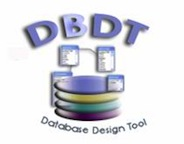
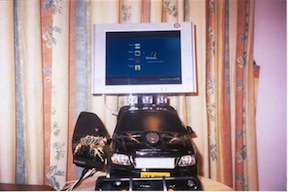
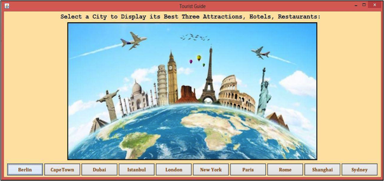
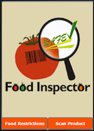

Tahani Almanie
Riyadh
Saudi Arabia
t.almanie@gmail.com
Saudi Arabia
t.almanie@gmail.com
Work Experience
| Job Title | Institution | Department | Period |
|---|---|---|---|
| Teaching Assistant | King Saud University | Information Systems | Jan 2014 to current |
| Programmer | Ministry Of Education | Teachers Affairs | Dec 2005 to Dec 2013 |
Education
| Degree | School | City | Year |
|---|---|---|---|
| Bachelor in Computer Science | King Saud University | Riyadh, Saudi Arabia | 2004 |
| Master in Computer Science | University of Colorado Boulder | Boulder, Colorado | 2016 |
Portfolio
DBDTool

This is my graduation project for the undergraduate. DBDTool is a database-designing tool that is mainly concerned with transforming an ER diagram to SQL in order to be used by MS Access in building a database.
Ford SUV Case Mod

This project is a creative design of a computer case mod using the body of an electronic remote control Ford SUV toy. It was presented at the extracurricular activities competition in King Saud University 2004 and got the first prize.
Tourist Guide

This project is a desktop application named Tourist Guide. It guides the user by providing some images, description, location for the top attractions, hotels, restaurants in a selected city. It is a concurrent application and designed by Clojure programming language as a semester project for Software Engineering class in University of Colorado Boulder.
Food Inspector

This project is an interactive prototype for a mobile application called Food Inspector. This app enables users to inspect their food to see whether or not the product is safe for them and which ingredients conflict with their restrictions. This app can also provide some suggestions of alternative products. It is designed by Axure and was the semester project for User-Centered Design class in University of Colorado Boulder.
Skills
| Technical Skills | |
| Personal Skills |
Honors
| First rank of the undergraduate class with first honor degree | Jun 2004 |
| First prize in the extracurricular activities competition | Feb 2004 |
| Fourth prize in the educational programs competition | Jan 2004 |
| Third prize in the website projects competition | Sept 2001 |
References
| Name | Job title |
|---|---|
| Hussah Al-Salamah | Assistant Professor at King Saud University |
| Maha Al-Hogail | Manager of Teachers Affairs Department |